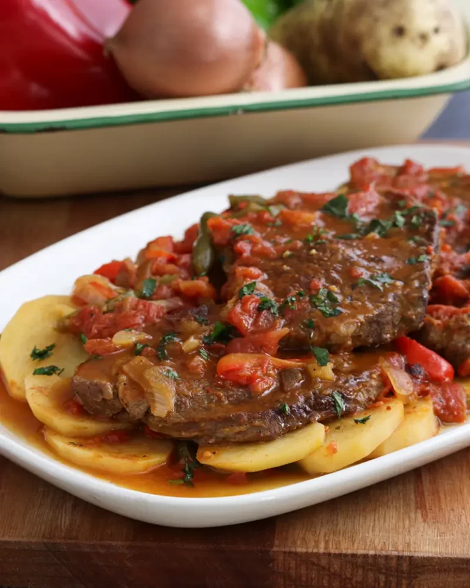

Creole steak

“Creole Steaks”, a simple dish but full of irresistible flavors and
textures.
Criolla Steaks are a perfect option for those who love meat and
traditional flavors. In this recipe, we will combine juicy
“paleta” steaks (Argentine cut of beef) with a delicious
Creole sauce with fresh and aromatic ingredients. Accompanying
with potatoes cut into thin slices.
Ingredients
- Shoulder Steaks 3 u (700 Gr)
- Onion 1 u
- Green Bell Pepper 1 u
- Red Bell Pepper 1 u
- Pope 2 u
- Crushed Tomato 250 Gr
- Broth 1 cup
- Salt and pepper to taste
- Paprika 1 Tsp
- Olive Oil 3 Tbsp
Makes 3 servings
Step by step procedure
- Cut the bell peppers and onion into strips
-
Peel and cut the potatoes into slices, approximately 1/2 centimeter
- Place oil in a pot over medium heat
-
Season the steaks with salt and pepper and cook in the pot until browned
or “sealed” on both sides
- Remove them and reserve
-
Pour half of the broth into the pot and stir to lift the bottom of the
pot
-
Add the bell peppers and onion, season with salt, pepper and paprika
- Mix well to incorporate everything
-
Add the potatoes and distribute them over the entire surface, forming a
layer
- Place the steaks back into the pot, above the potatoes
- Add the crushed tomato and the rest of the broth
- Cover the pot and cook over low heat for about 30 minutes
- Remove from heat, let rest for about 5 minutes
Serve, add chopped parsley to taste and enjoy.
It can be accompanied with white rice, some fresh salad or simply enjoyed
alone.